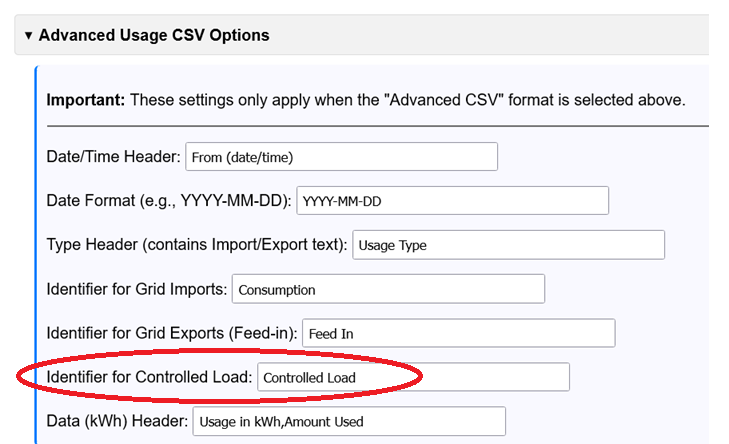
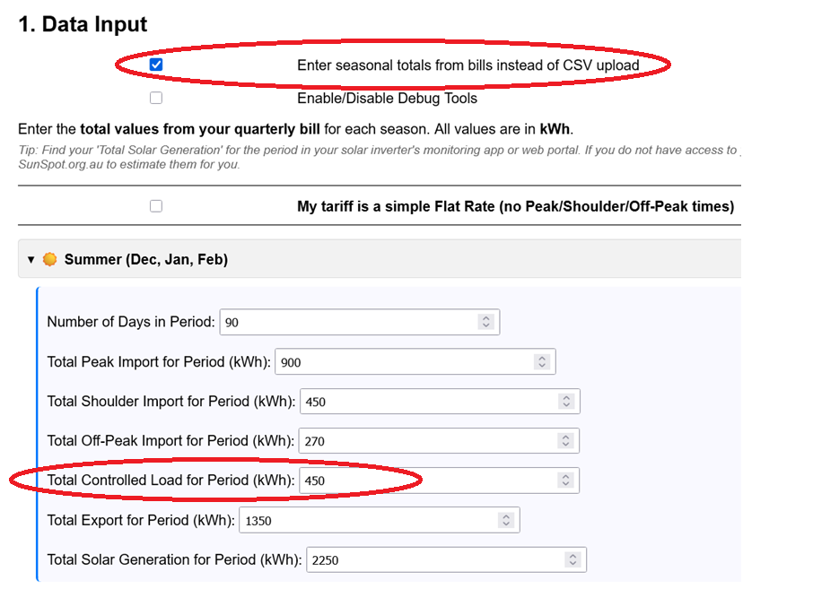
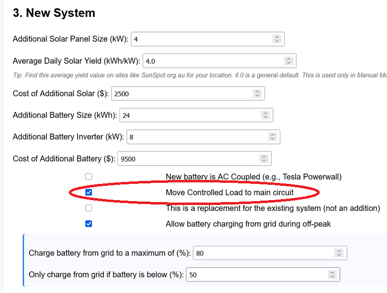

This guide explains how to model the financial impact of moving your "Controlled Load" (like a hot water system or pool pump) from its dedicated, cheap tariff onto your main household circuit. The goal is to see if you can save more money by powering it with your "free" solar or battery energy instead.
This feature will only work if the analyser knows how much controlled load energy you use. You must provide this data in Section 1:
No configuration is required as the file uses a standard format. You can check the file and see if there is "C1" or "C2" contained in the file.
Ensure your usage file contains your controlled load data. In "Advanced Usage CSV Options", you must enter the correct "Identifier for Controlled Load" (e.g., "Controlled Load", "CL", "Off-Peak 2") that matches the text in your CSV file.

In each seasonal section, enter the total kWh from your bill into the "Total Controlled Load for Period (kWh)" field.

Go to Section 3: New System. Find and check the box labelled:
"Move Controlled Load to main circuit"

Checking this box fundamentally changes the simulation for your New System. Here is what happens:
Scenario 1: Checkbox is UNCHECKED (Default)
Scenario 2: Checkbox is CHECKED (You are testing this)
This is a financial trade-off:
Are the savings from powering your hot water with "free" solar/battery energy greater than the new cost of sometimes running it on expensive Peak/Shoulder grid power when your battery is empty?
Ensure the rest of your analyser setup is complete. This feature interacts heavily with your new system size and provider tariffs.
Click the Run ROI Analysis button. To see if this scenario is worth it, you should run the analysis twice:
Compare the results. If the final NPV or Savings in Run 2 are higher than in Run 1, moving your controlled load is financially beneficial for your setup.